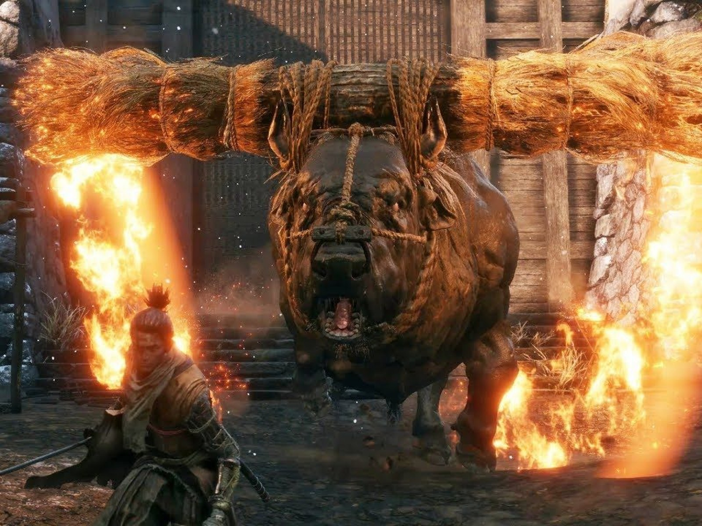
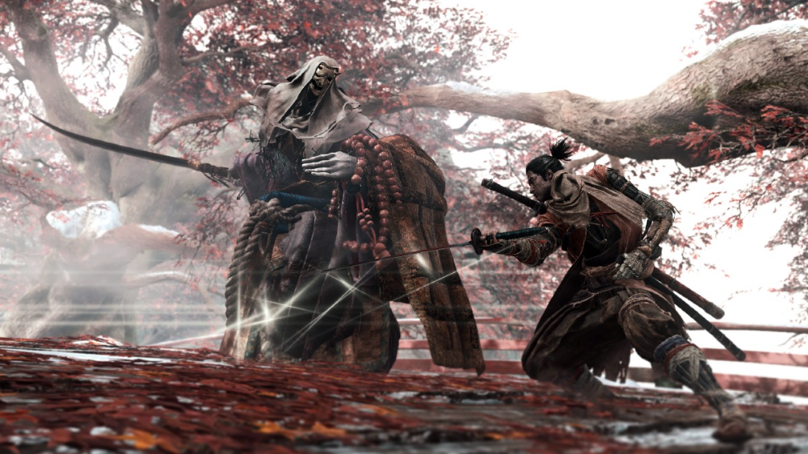
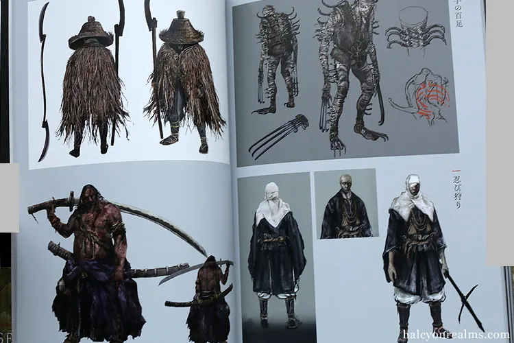
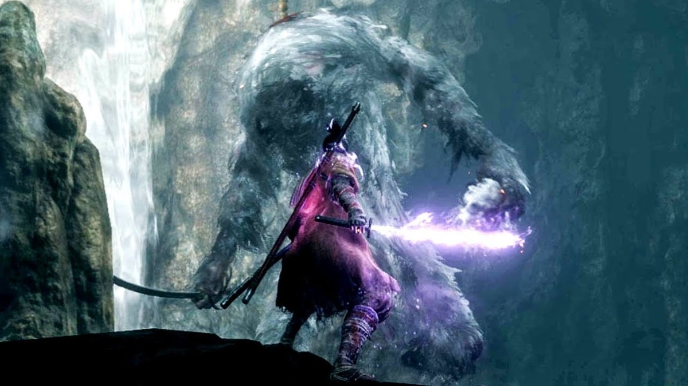

Único jefe por el cual Lobo muestra respetoCinemática épica del juego

Monja con la que se enfrenta Lobo en el juego

Artbook con diseños de enemigos de Sekiro: Shadows die twice

Jefe mono distinguido por atacar descontroladoSerpiente que amenaza al protagonista durante gran parte del juego